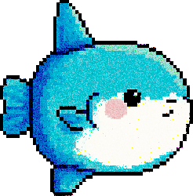
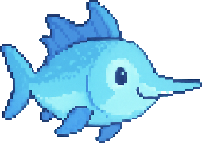
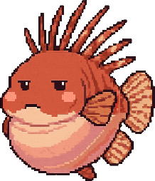
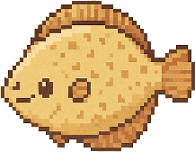
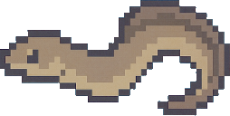
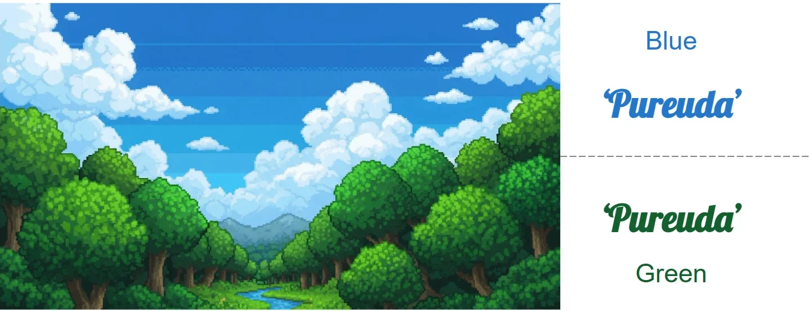

The Grue Divide: When Cognitive Accuracy Doesn’t Predict Affective Alignment
Kai Hyeyeon Park · Linguistics Department, Georg-August University of Göttingen · kai.hyeyeon.park@gmail.com





Korean speakers counted blue-gradient blocks more accurately than English-speaking cohorts. Yet seeing a color with the same precision doesn’t mean feeling it the same way.
The big idea Each number matches a section below.
It isn’t only whether a language has separate basic color words. How its color words are built, and how often they’re used, matter too. And because color words don’t map one-to-one across languages, feeling needs its own measure.
1The puzzleKorean uses one word, pureuda, for both blue and green. A naive reading of Whorf predicts worse discrimination there. Korean speakers were more accurate.
→
2Two cluesSpeed: faster only in the blue-to-green gradient, where Korean and English boundaries differ. This matches Winawer’s Russian finding.Accuracy: better across all four gradients. This fits how productive Korean color words are (many derived forms) and how often Grue is used.
→
3So we measure feeling, tooWords can’t be matched one-to-one across languages (419 Korean variants vs. 20 English derived forms). SFF scores every keyword on the same three axes instead, so affect can be compared directly.
Why does this matter?FOR MULTICULTURAL AI
AI speaks many languages, but not every culture.Models trained mostly on English text miss cross-cultural differences in emotional expression and lean toward Western value systems. (Havaldar et al., 2023; Tao et al., 2024)
Translation isn’t enough.Output that reads as culturally generic, not locally situated, is judged lower-utility in that market. Color is a small, tightly scoped place to start.
Accuracy isn’t alignment.A model that gets color categories right can still miss what they feel like. Alignment may need to model perception and affect together.
1The puzzle: why Grue?

One word for the blue sky and the green forest. Does that mean Korean speakers can’t tell green from blue? Our data say no.
Blue is the anchor. In Obangsaek, the five cardinal colors, blue stands for the East, wood and spring; the everyday word for green, chorok, is a Sino-Korean loan.
Few forms, most used. Grue has the fewest derivational variants yet the highest recall frequency among Korean color categories (Lee and Kim, 1996; 42,000+ responses).
Nuance lives in one word. Korean builds shades from a single root with prefixes, suffixes and vowel shifts; English mostly uses phrases.
MHow we tested it
RecruitmentProlific, X, HelloTalk, LinkedIn · 2,264 people
LLM #1: scene generationGemini 2.5 Flash · 3 scenes per color (9 total)
→
one web session per participant
Study 1: block countingBlue → White, Black, Yellow, Red gradients · 6 trials, 3 levels
↓ then
Study 2: affect keywords1 scene per color (Blue, Green, Teal) → open-ended keywords
→
Cohort filterL1 matches country · ≥ 20 yrs residency904 KR / 255 EN · N = 9,534 trials
Error rate, KR − AU 90% interval of the difference
The whole interval sits inside the margin: equivalent (TOST p = .003; Bayes factor ≈ 4.6 for “no difference”). Response time was not equivalent (TOST p = .625).
… but not in feeling
How far is Australia’s feeling profile from…? distance in SFF space
Blue
KR0.223
US0.075 ← nearest
UK0.179
Green
KR0.279
US0.167
UK0.061 ← nearest
Teal
KR0.368
US0.477
UK0.315 ← nearest
For every color, Australia’s nearest neighbour is an English-speaking cohort, never Korea.